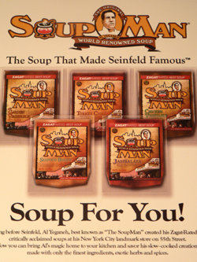

The Soup Nazi
The following postcard showed up in my FreshDirect delivery this morning. Have you ever seen a more pathetic piece of marketing material?

In case you can’t read the text, it reads “Long before Seinfeld, Al Yeganeh, best known as ‘The SoupMan’ created his Zagat-Rated critically acclaimed soups at his New York City landmark store on 55th Street.” Are you kidding me?
This, of course, is the man who inspired the Soup Nazi episode of Seinfeld, and he’s certainly not “best known” as anything other than the Soup Nazi. If the Wikipedia is to be believed, he didn’t even start calling himself the SoupMan until ten years after that episode of Seinfeld put him on the map.
I’m sure Yeganeh was making good soup and being a bastard before the episode aired, but to pretend he hasn’t benefited from the show, and that he in fact made Seinfeld famous, is totally ridiculous and doesn’t even make sense.
Comments
I tried the turkey chili and it was pretty tasty (and quite spicy!) but I’m not sure it was worth $6 for that amount of soup. It came frozen in a plastic bag and just required microwaving or putting into boiling water.
Seems like maybe he’s just trying to get some payback from Seinfeld…bastard or not, to be labelled as a Nazi’s not fun.
There used to be some soup store open called
Just a thought:
The Soup Nazi guy, Al ‘Something’, did have long lines – I stood in them for years. And yes they got twice as long after Seinfeld.. and he got twice as surly too. Maybe it did ruin his life? Anyway,in NYC he opened a few more soup places and has other “nice” people serve the same great soup.
But the real marketing ripoff is the one mentioned above. “Soup Nutsy”… they made “ok” soup but nothing like the real Nazi.
He probably got tired of all the wannabes taking his idea and decided he would do it. He was the original… I know of no other only soup place that started before Seinfeld. And trust me, it is very very good… if you are ladle “worthy”!
Add a comment